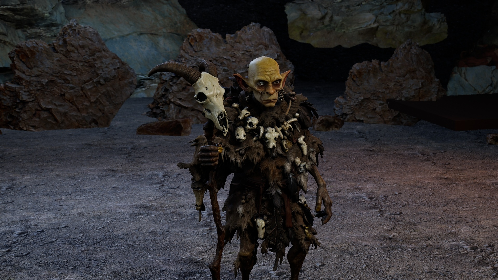
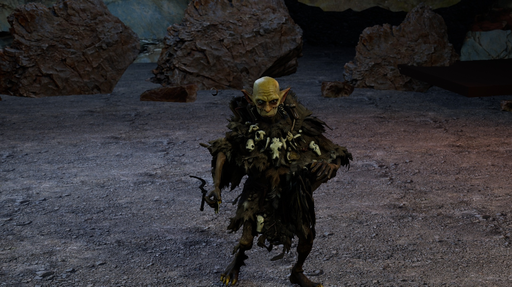
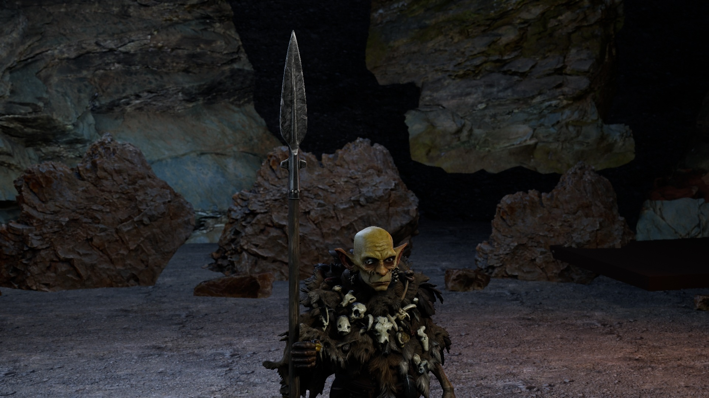
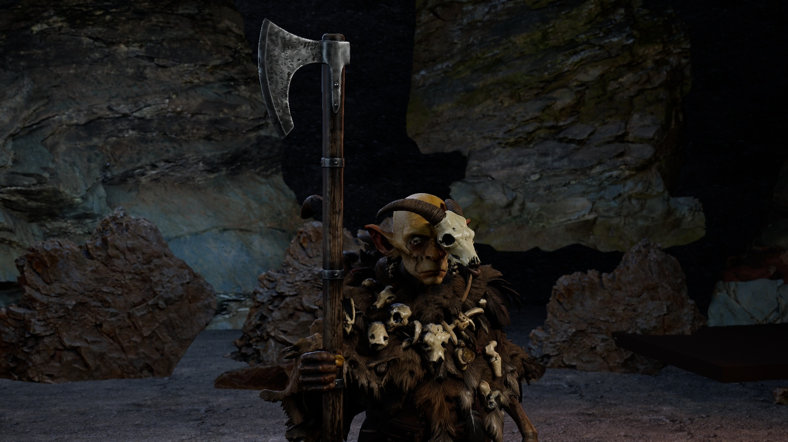

骨咒萨满
Bonecaller
BONE HEX / 诅骨咒十二个不同个体、十种受击动作，以及 Champion 全部十四招。三个独立 UE5 实拍片段。
打开高清 demo →Champion 五种受击、四个哥布林兵种的动作，以及囚笼内的精灵囚徒。
打开最新高清 demo →深层巢穴巡览和 Champion、Lightblade 近景战斗。
打开最新高清 demo →四区巡览、Champion 和 Lightblade 巢穴战斗，三段全新 UE5 实拍。
打开最新高清 demo →暗黑写实哥布林部族。骨咒萨满、腐牙掠夺者、沼影猎手与角骨重卫，在岩洞巢穴中展示造型、攻击、受击和倒地。
岩洞、骨杖祭坛与储物角；四种部族分支依次展示各自的武器和攻击动作。
下载高清片
Bonecaller
BONE HEX / 诅骨咒
RotfangRaider
RAGGED CUT / 腐牙横切
MireHunter
NEEDLE THRUST / 沼影突刺
Skullguard
BONE BREAKER / 碎骨重劈四种分支基于同一新选定的哥布林模型，使用不同体型、肤色、武器与骨饰。点击图片可看高清原图。
横斩受击、上劈伏倒、突进前扑与重斩后倒。保留主角已定型的造型和原始招式。
下载高清片双刃试探、弧月斩、反手回刃与风切收招，配合不同哥布林的受击、失衡和死亡叫声。
下载高清片本轮战斗实拍包含四种死亡动作；下方另列已配置的四种非致死受击动作。所有兵种和两位主角的招式名称可下载查看。